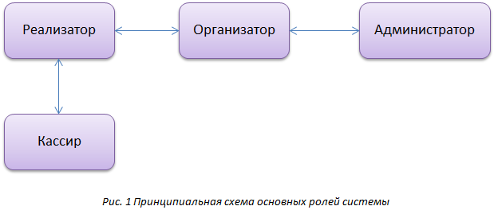

Работа с программой
В системе существует четыре основные роли (Рис.1)

Рассмотрим каждую роль более подробно:
Администратор – роль в системе, которая выдается пользователю, отвечающему за обеспечение оптимальной работоспособности системы и ее пользователей, имеющий возможность создавать и удалять других пользователей системы, присваивать им необходимое количество прав, назначать им роли. Администратор имеет привилегированные, более расширенные права доступа к системе, чем остальные роли.
Организатор – роль в системе, которая выдается пользователю, отвечающему за организацию мероприятия, устанавливающий цены и квоты для каждой категории билетов в рамках мероприятия для пользователей системы. Организатор получает в системе отчеты о продаже, назначает процент продаж, осуществляет контроль продаж и документооборот.
Реализатор – роль в системе, которая выдается пользователю, отвечающему за распространение билетов и получающее за это процент от продажи (установленный организатором). Реализатор может произвести резервирование или доставку билетов. Реализатор также имеет право предварительной печати определенного набора билетов, которые он в дальнейшем будет продавать.
Касса – роль в системе, которая выдается пользователю, отвечающему за продажу билетов, печать их на едином бланке, и выдачу сопроводительных материалов. В кассе можно также забронировать билеты и заказать их доставку. Роли Кассы и Реализатора схожи между собой. Фактически, роль Кассы - это упрощенная по функциям и правам роль Реализатора.
Каждая роль в системе может быть использована, как отдельной организацией, со своей функциональной нагрузкой, так и одной компанией, использующее несколько ролей в едином процессе продажи билетов (например: театр, у которого собственный репертуар, зал и кассы).
|